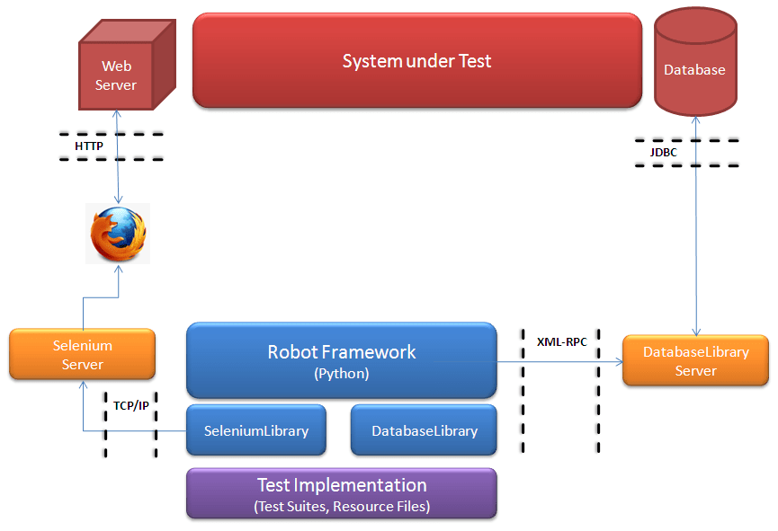
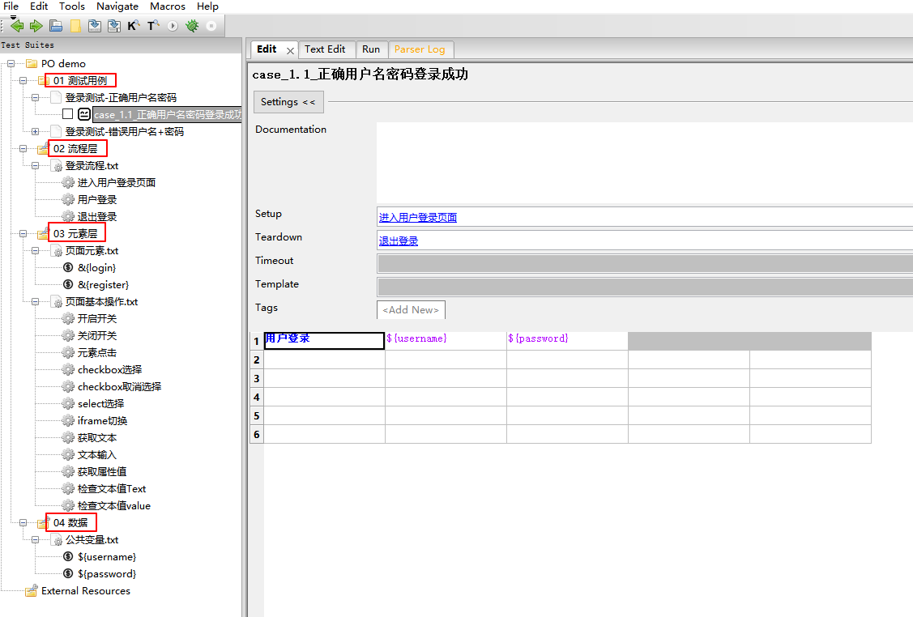
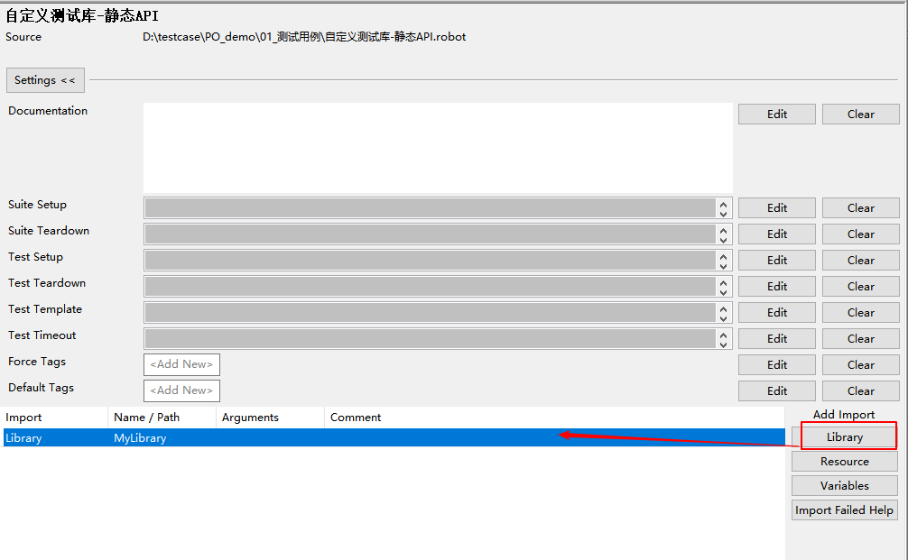
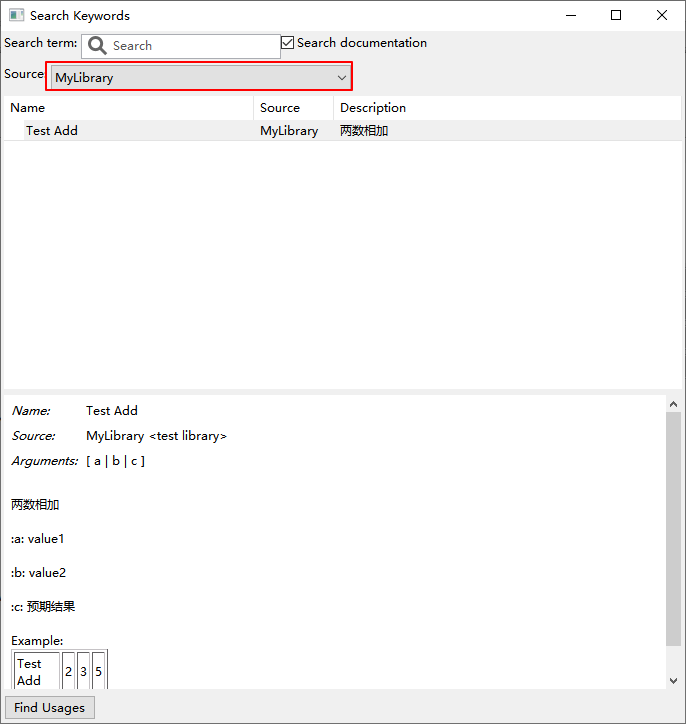
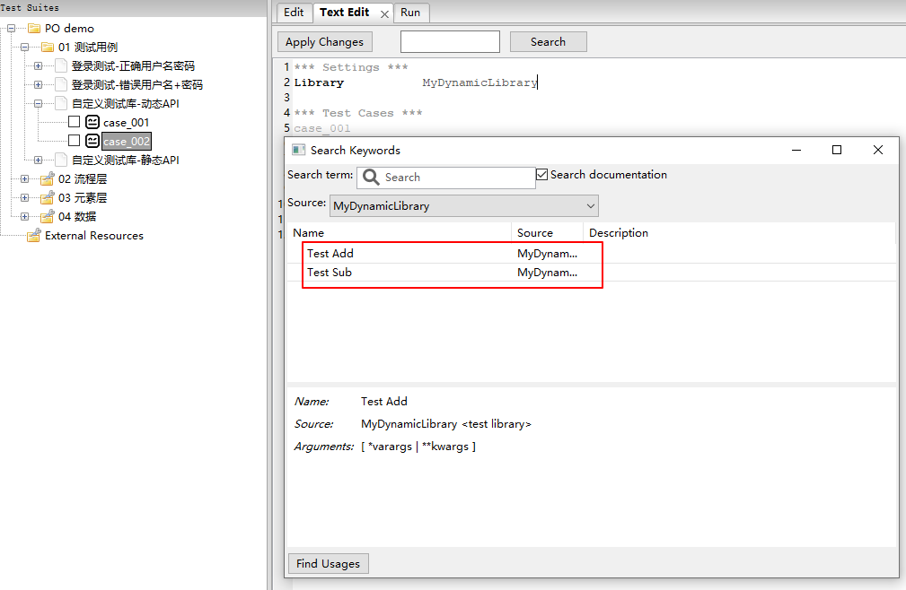
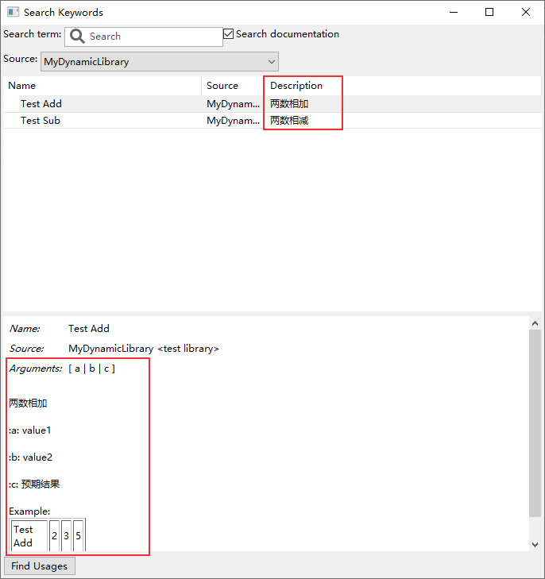
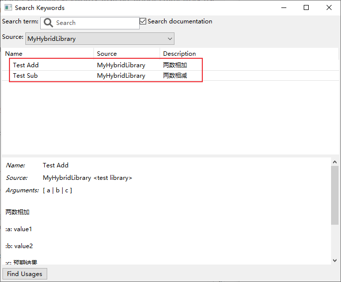
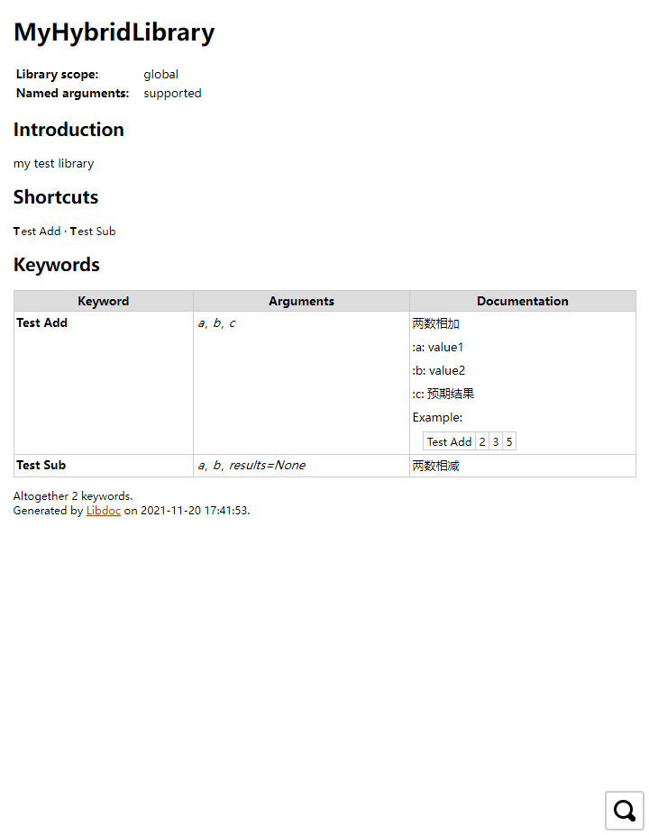

Robot Framework是一个开源自动化测试框架，主要特点是基于关键字驱动，本文介绍自定义测试库及测试库文档创建方法。
简介
Robot Framework是用于验收测试(Acceptance Testing)，验收测试驱动开发（Acceptance Test Driven Development, ATDD）和
机器人流程自动化（Robotic Process Automation, RPA）的开源自动化框架，支持数据驱动、关键字驱动和行为驱动（BDD）。它具有简单的纯文本语法，并且可以使用Python或Java实现库的扩展。
Robot Framework核心框架使用Python实现，支持Python 2 和 Python 3，还可以在Jython（JVM），IronPython（.NET）和PyPy上运行。该框架具有丰富的生态，有各种通用库和工具，比如selenium测试库SeleniumLibrary，appium测试库AppiumLibrary等，更多测试库可查看官网http://robotframework.org 。
Robot Framework GitHub地址：https://github.com/robotframework/robotframework
RIDE地址：https://github.com/robotframework/RIDE
下图是基于Robot Framework进行web自动化（SeleniumLibrary）测试的架构图，

安装：1
2pip install robotframework
pip install robotframework-ride
RIDE是使用wxPython库编写的Robot Framework图形界面。
RF分层思想
一个好的设计模式有助于提高脚本开发速度，且利于维护。使用Robot Framework进行自动化用例开发时可以考虑使用分层的思想，类似于Page Object 设计模式。
顾名思义，“分层” 意思就是把一个过程分为多层，比如下面的例子：实现web UI自动化的登录测试。

一共分为了4层：
01_测试用例：编写测试用例02_流程层： 封装操作流程关键字03_元素层：存放页面元素标签以及页面基本操作关键字，比如开关操作，点击，输入等04_数据：用来存放数据，比如全局变量
使用分层思想，将数据和流程分离开，能够减少一些由需求变更引发的修改，更易于扩展和维护。当然也可以使用其它分层方式，最终目的是让你的项目容易维护。
Robot Framework的测试库已经非常丰富了，如果还是无法满足需求，可以自己开发，下面来介绍如何开发自定义测试库。
开发自定义测试库
Robot Framework主要有三种API：静态API、动态API和混合API，下面分别进行介绍。
静态API
静态API直接将方法(methods)映射为关键字。关键字接收的参数和方法相同的参数一样。
1. 编写测试库
在~\Lib\site-packages目录中新建一个包【比如MyLibrary】， 然后在创建的测试库MyLibrary目录下新建MyKeywords类文件(MyKeywords.py)，用来封装要实现的关键字。
1 | class MyKeywords(): |
接下来在~\Lib\site-packages\MyLibrary 目录下新建version.py 文件，用于设置自定义测试库MyLibrary的版本信息。
1 | # -*- coding:utf-8 -*- |
然后在__init__.py文件导入关键字及版本信息。
1 | # -*- coding:utf-8 -*- |
2. 导入测试库
创建一个测试套件，然后导入测试库

查询测试库关键字信息（F5）

3. 编写用例脚本
1 | *** Settings *** |
动态API
动态API和静态API的区别在于发现测试库关键字、关键字的参数、说明文档，以及关键字实际执行方式不同。Python版本中，静态API是使用反射的方式获取（python反射介绍可参考Python反射介绍），而动态API采用的是指定的方法来动态获取这些信息，主要包括4个方法：get_keyword_names、run_keyword、get_keyword_arguments和get_keyword_documentation 。这些方法其实也使用了Python反射函数来获取测试类属性信息。
使用动态API的好处就是可以更加灵活的编写测试库，动态API说明文档可参考：http://robotframework.org/robotframework/latest/RobotFrameworkUserGuide.html#dynamic-library-api
1. 编写测试库
和静态API类似，在~\Lib\site-packages目录中新建一个包【MyDynamicLibrary】， 然后在创建的测试库MyDynamicLibrary目录下新建MyKeywords类文件(MyKeywords.py)，用来封装要实现的关键字。
1 | from robot.api.deco import keyword |
get_keyword_names 方法实现动态获取关键字名称，此方法没有参数，并且必须返回包含当前测试库实现的关键字列表或数组。代码中使用到了python反射函数 getattr() 、 hasattr 和 dir()。
run_keyword 用于执行关键字，包括2个或者3个参数：name, args, kwargs，name 为关键字方法名称，通过get_keyword_names 获得；args 为关键字方法的位置参数，kwargs为关键字参数，可以不设置。
get_keyword_names 和 run_keyword 是动态库必须要有的方法，如果没有它们就会变成一个静态库。动态API涉及到的主要方法如下表。
| 方法 | 参数 | 说明 |
|---|---|---|
get_keyword_names |
获取关键字名称 | |
run_keyword |
name, arguments, kwargs |
执行关键字 |
get_keyword_arguments |
name |
获取关键字参数（可选方法） |
get_keyword_types |
name |
返回关键字参数类型信息（可选方法） |
get_keyword_tags |
name |
返回关键字标签（可选方法） |
get_keyword_documentation |
name |
返回关键字及测试库文档（可选方法） |
get_keyword_source |
name |
返回关键字源信息（可选方法） |
Calculate是一个存放关键字的类，这个类可以写在其它模块中。
__init__.py 和 version.py文件和静态API写法一样。
2. 导入测试库
导入测试库MyDynamicLibrary后，查询测试库关键字信息（F5）

从上图可以看到已经获取到了关键字，没有添加 @keyword 装饰器的not_keyword 关键字没有显示出来。
另外，Description那一列是空白的，Arguments没有显示关键字的真实参数，关键字注释文档也没有显示。这需要get_keyword_documentation 和 get_keyword_arguments 这两个函数来实现文档和变量显示。将下面代码添加到MyKeywords类中：
1 | def get_keyword_documentation(self, name): |
重启Robot Framework，F5查看测试库关键字信息：

3. 编写用例脚本
1 | *** Settings *** |
执行，日志如下：1
2
3
4
5
6
7
8
9Starting test: PO demo.01 测试用例.自定义测试库-动态API.case_001
20211119 18:00:00.980 : INFO : Running keyword 'test_add' with positional arguments ('2', '3', '5') and named arguments {}.
20211119 18:00:00.980 : INFO : ${res} = True
Ending test: PO demo.01 测试用例.自定义测试库-动态API.case_001
Starting test: PO demo.01 测试用例.自定义测试库-动态API.case_002
20211119 18:00:00.982 : INFO : Running keyword 'test_sub' with positional arguments ('6', '1') and named arguments {'results': '5'}.
20211119 18:00:00.982 : INFO : ${res} = True
Ending test: PO demo.01 测试用例.自定义测试库-动态API.case_002
动态库也可以借助robotlibcore 库来实现，编写动态API更加简洁。具体使用方法参考：https://github.com/robotframework/PythonLibCore
混合API
混合API就是静态API和动态API方式的混合使用。混合API通过使用 get_keyword_names 方法获取所有关键字，但是不使用 run_keyword 方法执行关键字，执行方式和静态API相同。
在~\Lib\site-packages目录中新建一个包【MyHybridLibrary】， MyKeywords.py文件中编写关键字方法，使用 get_keyword_names 方法获取关键字，其它写法和静态API类似：
1 | from robot.api.deco import keyword |
__init__.py 和 version.py文件和静态API写法一样。
导入测试库MyHybridLibrary后，查询测试库关键字信息（F5）

导入Python脚本
如果不想创建包，可以直接写py文件，然后导入。
可以将测试库文件放在 ~\Lib\site-packages 目录下，这样在导入 Library 的时候可以直接写库名称就可以了，如果放在其它地方，需要使用绝对路径或者相对路径。
需要注意的是测试类名称要和文件名一致，比如编写测试库TestLlibrary.py：
1 | class TestLlibrary(): |
这种方式和静态API的关键字读取、文档显示、关键字执行一样，其实它就是静态API。
生成测试库文档
可以将关键字方法的document注释（3个双引号括起来的内容）提取出来生成一个测试库文档。使用Libdoc工具可以很方便生成一份测试库文档，命令格式：
1 | python -m robot.libdoc -f html MyLibrary MyLibrary.html |
生成MyHybridLibrary库文档：
1 | $ python -m robot.libdoc -f html MyHybridLibrary MyHybridLibrary.html |
MyHybridLibrary.html内容：

这非常方便，不需要另外编辑一份测试文档，更新关键字后，执行上面的命令就可以快速生成。
参考文档：
- https://robotframework.org/robotframework/latest/RobotFrameworkUserGuide.html
- https://github.com/robotframework/PythonLibCore
本文标题:Robot Framework自定义测试库开发详解
文章作者:hiyo
文章链接:https://hiyongz.github.io/posts/test-framework-for-robotframework-skills/
许可协议:本博客文章除特别声明外，均采用CC BY-NC-ND 4.0 许可协议。转载请保留原文链接及作者。